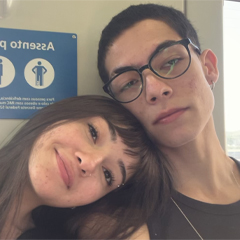

Do impossível ao incontestável.

Nossa história parece o roteiro de um filme romântico;
fomos do casal improvável ao inseparável em poucos meses,
e eu me orgulho muito disso. Nunca foi fácil; logo quando nos conhecemos,
veio a notícia de que eu me mudaria para Minas Gerais, mas ambos
sabíamos que deveríamos, pelo menos, experimentar algo que desde o começo foi diferente.
Quando já estava em Minas, ficamos sabendo que agora quem se mudaria era ela,
mas para ainda mais longe, para Portugal. Ainda distante, a viagem que só viria a
acontecer um ano e meio depois era um tópico completamente assustador,
mas mais uma vez, resolvemos não desistir.
E assim foi, por mais dois meses, até que eu retornei para São Paulo
e daqui tudo seria mais fácil. Pelo menos era o que eu pensava...
Cada vez mais certos da ideia de que ela iria para Portugal,
nos encontrávamos quase que desamparados, lutando por algo que parecia nunca se concretizar.
Mas assim seguimos, tentando e segurando até onde deu, e como é bom lembrar disso depois que
tudo deu certo... Depois de tanto aguentarmos, decidimos que era hora de dar mais um passo.
Então começamos a namorar, namoro esse que, modéstia à parte, teve o pedido de namoro mais
lindo possível. Após tanto esforço, tanta luta, finalmente uma luz no fim do túnel!
Infelizmente (ou não), ela já não iria mais para Portugal.
E agora vivemos a nossa infinda história de amor, para sempre eu por ela, e ela por mim.